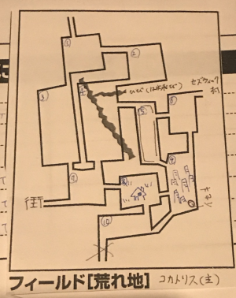

「ちぃーす」
「ちゃーす、ごはん食べてきました？」
「食べてきた」
「こっちはまだランチが来ません」
「先にお買い物とかしちゃおうか」
「ん？なんかちょっとこれスキルとかの計算おかしくない？」
「今までの計算だと経験点5500ぐらいになるはずやで」
「6500になります」
「いやそれおかしいだろ」
「初期分引いてなかった」
「こっちはレベルアップ抑制でため込んでたつもりの経験点がなくなりました」
開始早々事故が発生したようです。確認は…大事やなって…
というわけで今回もエターナっていきますよー。
前回は討伐クエストをこなし、その後街へ赴きました。
というわけで街に着いたのでお買い物タイムです。村では買えなかったものを買いましょう。
みぞれ「お金がない」
「うそやん何に使ったの」
みぞれ「草と弾丸ぐらいにしか使ってないです」
GM「足し忘れたんじゃない？多分2000ぐらいだったはずだから2000足しといて」
みぞれ「これでマギスフィア(大)が買える…けどこれ背中か、ガンベルトどうしよう」
「他のところに付けられるんじゃないの？」
みぞれ「今、腰と背中に1つずつ付けてる」
「それひとつでええんやないか？12ターンもかかる戦闘ほぼないでしょ、リロードもあるし」
みぞれ「ガンベルトないと弾丸が持ち運べないのでは？サンプルキャラも2つ付けてる」
「ほんまや」
「しらんかった」
「弾丸はデリケートなのでそのまま持ち歩くことはできません…ですってよ」
「ガンベルトごと袋に入れたら？付け替えは装備品の付け替えと同等で」
みぞれ「それは許されるんでしょうか」
GM「採用します」
道具袋に放り込まれるガンベルトであった。
GM「街では条件を満たせば依頼を受けることができたりします。君たちは現時点でケイトに会うことができますが、ケイトルートでないと今はダンカン商会から依頼を受けることはできません」
「シドルートだと何がいいの？」
GM「後半に乞うご期待ということで」
「依頼も受けられない、村で物資も買えない、シドルートはハードモードだった」
GM「このキャンペーンクリアした人何人か知ってるけど、みんなケイトルートなんだよね…」
「みんな女の子大好きか」
みんなお買い物を一通り終えて、街から村へ戻ります。
当然、その間にある荒地を超えなければなりません。
GM「では主のいる場所を決めます。ブルーローズ、1D6を振ってください」
ブルーローズ「ころころ。1です」
GM「ふむ、なるほど」
GM「君たちは荒野の街の入口に来ました。イベントを振ってください」
ブルーローズ「1です」
GM「何も起きませんでした」
GM「ここは草がまばらに生えているだけの荒野です。時折回転する草が風に吹かれて転がっていきます」
ピーター「あれ実は生殖らしいですよ」
「まじで」
後で調べてみたら大量発生してる動画があってくっそ笑いました。
次のエリアはオアシスです。
ここは前回通っているので、敵が出ず、宿泊ができることが分かっています。
敵が出ないのは、以前訪れた木こりの集落にあったものと同じ花が生えているからです。
ほんと有効活用できませんかねこの花。
泊まる必要もないので探索だけします。
GM「銀貨袋30ガメルが見つかりました」
ピーター「え、300ガメルが？」
GM「このウサギは…1D6振ってください」
ピーター「3です」
GM「では3袋見つかりました」
ブルーローズ「きっと志半ばで倒れた冒険者さんが我々のために残しておいてくれたんですね！ありがとう、貴方たちの遺志はしっかりと受け取りましたわ！」
GM「なお袋を開けてみるとそこには血がべっとりと」
エリア移動。どんどん村に近づきます。
ピーター「イベント振ります。3です」
GM「旅人イベントですね」
「また襲われてるやつか！？」
GM「1d6どうぞ」
ピーター「1です」
行商人「この辺りにセズウィック村という集落があると聞いてきたんだが、君たち知らないか？」
ブルーローズ「まあ！お目が高いですわ！セズウィック村はとてもよいところですのよ！これからどんどん発展していく予定ですのよ！」
行商人「おおそれはありがたい！君たちにそこまでの案内と護衛を頼みたい」
ブルーローズ「もちろん引き受けますわ！」
GM「なおこの行商人はHP10防護点2です。能力はないので行動判定は素目になります」
「こいつどうやってここまで来たんだ」
GM「なおこのイベント、村への隣接エリアだと一度オアシスまで行かなければいけません」
「ちょうど隣だ、運がよかった」
GM「そしてこの行商人も戦闘中に攻撃対象となります」
「大丈夫戦闘しなければどうということはない」
みぞれ「待って、フラグ立てるのやめて←次イベント振る人」
ナナシ「とりあえず探索します。…遺跡見つけました」
「えっ」
村の入口エリアに来ました。
GM「ではイベント振ってください」
みぞれ「ころころ…あっ5(フラグ回収)」
GM「では戦闘です。これ初めてのモンスターだなあ。1mぐらいの人型の土くれが2体」
「クレイゴーレム(仮)」
GM「同じく1mぐらいの空を飛ぶ暗褐色の肌のモンスターが2体」
「ドラキー(仮)」
「このゲームドラキーとかおらへんやろ」
ピーター「魔物知識判定します」
GM「飛ぶ方はインプです。弱点は抜けません。土くれの方はわからないですね」
ピーター＆タッシュ「隣が村だからこれ全力戦闘していいよね」
ナナシ「はい先制取りました」
ピーター「ではゴーレム1体に副行動でパラミスかけます。そしてウィンドカッターを4体に…あっクリティカル」
GM「インプ1体が抵抗に失敗しました、クリティカルダメージください…はい、落ちました」
タッシュ「では残りにエネボ数拡大確実化で」
GM「全員抵抗失敗です、インプ消えました」
ナナシ「パラってない方のゴーレムを攻撃します」
GM「まだ倒れません」
ブルーローズ「行商人対象でオース使います。あとGMー、移動距離足りないんで異貌使ってペナ無効にしていいですか？」
GM「んんー…いいでしょう、通します」
みぞれ「行商人いるけど異貌してええのん？」
ブルーローズ「やった！それじゃ魔力撃をパラってない方に」
GM「回避」
ブルーローズ「い…今のはフェイントだ！追撃クリティカル！」
GM「ゴーレム落ちました。…ではここで行商人が異貌を見てどう思ったか決めたいと思います」
ブルーローズ「( ﾟдﾟ)ﾊｯ!」
みぞれ「あっやっぱり」
GM「2d6どうぞ」
ブルーローズ「…9です！」
GM「どうやら行商人はナイトメアに理解がある方であるようです」
ブルーローズ「セーフですわ」
ナナシ「俺もナイトメアのことどう思ってるか振っておこうかな」
「何故今更」
みぞれ「んーどうしようかなー、パスしてもいいけど当たれば沈む計算だから撃っとくか…あっ低っ」
GM「それは回避ですね、ではこちらのターン、ゴーレムがナナシを攻撃」
ナナシ「ひらり」
GM「このランクだとナナシは回避無双なんだよなあ」
ナナシ「じゃラスト1匹のゴーレムを攻撃」
GM「沈みました」
戦闘が終わったので、ようやく村に到着です。
行商人を連れ帰ったので、商業値が＋1されました。
それに伴い、建設ポイントが+1されます。
これが上がると新しい建物が建てられるようになるらしい。
ピ「これからどうします？クエストします？今見つけた遺跡行きます？」
GM「ちなみに敵のレベルはフィールドは0.5単位で計算されますが、遺跡は1で切り上げます。つまり今行くと4レベル相当の敵が出ます」
「遺跡は全員4になってから行こう」
「せやな」
「それじゃこないだ出てきた月の雫クエストやりましょう、レベル3だし」
「前回レベル2クエストで死にかけたんだよなあ」
「レベル2とはなんだったのか」
「ボスのレベルでしょ？」
「雑魚が弱いとは言っていないやつ」
村入り口エリアでぶっぱしたのでとりあえず一日宿泊しました。
GM「では、君たちは月の雫の依頼を受けました。依頼主ハロルド・レナーテは薬草業者になります」
ピーター「これは商業値が上がる感じのクエストですね？」
ハロルド「僕はここに薬草店を建てたいと思っているんだが、ムーンドロップと呼ばれる薬草が見つからなくて困っているんだ。それは荒地の泉のそばに生えているらしい。僕と一緒にそのムーンドロップを探しに行って欲しいんだ」
「『僕と一緒に』(復唱)(蘇る行商人イベント)」
ハロルド「ムーンドロップはぱっと見素人には判別がつかない草なんだ、だから一緒に行かないといけない」
というわけで護衛イベントとなりました。
ハロルドも先ほどの行商人と同じで、HP10、基準値0、防護点2のガチ一般人です。
ブルーローズ「やった！オース会が開催できますね！」
「オース会とは」
「あ、ハロルドに俊足の指輪を渡して使い方を教えるのはどう？」
ナナシ「こうですか？ぱりーん」
「見本を見せるな」
ブルーローズ「君の指輪ひとつ渡してあげたら？」
ナナシ「やだよコレクションしてるんだから」
「泉って例のオアシスかな？
GM「違いますね、泉は探索で探さないといけません。ちなみに複数存在する可能性があります」
「デジャヴありますねえ」
「今スカウトレベル4あるから大丈夫でしょ」
「フラグ建築やめていただけます？」
GM「では荒地エリアへ移動ということで。まずは主の居場所の決定です。ブルーローズどうぞ」
ブルーローズ「ころころ…4です」
GM「なるほどね。では続けてイベント表を」
ブルーローズ「3です」
GM「旅人イベントですね」
「んんん…？」
GM「また1d6お願いします」
ブルーローズ「1」
行商人「この辺にセズウィック村という場所があると聞いて」
「護衛対象が増えた」
「こいつ村に置いてから行こうぜ」
「一度オアシス寄らなきゃいけないんじゃなかったっけ」
「あっそうか」
護衛対象が2人になりました。
GM「では自由行動です。探索するか、泉の探索をしてください」
「普通の探索と泉の探索は別？」
GM「別です。泉の探索の方が難易度は低いです」
ナナシ「遺跡探さなきゃ」
泉の探索は誰かが成功しましたが、このエリアで泉がないことが確定しただけでした。
「これ泉のあるエリアとないエリアああるってことかな」
「どこ調べたか泉を見つけたか管理しないと…」
「マップに書くより別記にした方がよくない？」
「管理番号付けよう管理番号」
「いーち、にーい…」
「これGMの方で管理してる番号と違う予感」
「合わせた方がいい？」
「合わせない方がいいんじゃないかな、GMがうっかり番号言ってネタバレしそうだし」
 というわけで管理番号が付きました。
「それじゃ西に移動しましょう。エリア5」
タッシュがイベントを振り、何も起きませんでした。
ブルーローズ「泉判定は1人成功すればいいんですよね？なら1人ずつ判定して、成功したら残りは探索でいいんじゃ」
「なるほど」
GM「このエリアには石柱が並んでいます。その中に蛮族の石像があります。巨大な鳥類が住んでいそうな感じです」
「主か」
GM「ここでは通常探索の代わりに主の巣を探索できます」
「では先に素目軍団で泉探索します…全員失敗しました」
みぞれ「では私が…成功、泉はないようですね」
ナナシ「巣になんかあった」
GM「粗末な武器を3つ手に入れました」
ピーター「そーまーつーなーぶーきーはーなーいーよー(紙の上でペンをうろうろさせながら)」
「どうしたの」
ピーター「手持ちリストに粗末な武器があるか探してた」←ドロップ品管理者
「中央行きましょう。エリア4で」
GM「風雨によって削られた岩の丘です。地面に割れ目がありますが超えるには幅跳びが必要です」
「我々はいいけどハロルドさんは落ちるよね」
GM「イベント振ってください」
ナナシ「5！」
GM「あっごめん振るまでもなかった、ここ確定戦闘だった」
「確定戦闘…だと…」
GM「全部で7体」
「多いなおい」
GM「3体は1mぐらいの真っ赤なモヒカン、2体は犬顔銃持ち」
「ついに来たよ銃持ちが」
「後衛に攻撃飛んできますね…」
GM「あと引き締まった体つきの人間ぐらいのやつが2体です」
「マスター殺る気満々だ」
「これ中衛が欲しいね」
「え、タッシュさんがいるじゃない」
タッシュ「待って、俺魔法使いだよわかってんの？」
赤いモヒカンはレッドキャップ、犬はコボルドシューター、残りはボガードと判明。
この辺の戦闘、めんどくさくてメモるの忘れてますね…
ピーター「めんどくさいから全員撃つわーどーん」
みぞれ「期待値でシューター屠れそうなので最初に撃ちます」
シューター1体撃破
ピーター「ウィンドカッター4体がけで、レッドキャップとシューターに」
GM「全員抵抗失敗しました」
ピーター「10点でーす」
シューター1体撃破、レッドキャップ残り8
タッシュ「スパークを5体にぶっぱします」
GM「ボガード1体だけ抵抗失敗しました」
ナナシ「レッドキャップ殴ります。クリティカルしました」
レッドキャップ撃破
ブルーローズ「魔力撃ハードノッカーでボガード削られてる方を」
ボガード撃破
敵のターンはナナシが全部スルーだ！いつものやつ。
ナナシ「ボガードを挑発攻撃します。またクリティカル」
ボガード瀕死。
ブルーローズ「魔力撃でボガード」
ボガード撃破。
残りのレッドキャップの攻撃はブルーローズが回避。
うち1匹をナナシが撃破しました。残り1匹。
ブルーローズ「モヒカンむしりまーす」
「やめたげて」
「意外と楽でしたね」
「レベル調整の結果ですね」
「タッシュとピーターがブレーキかけなければブルーローズが今頃レベル5になってたからね」
ブルーローズ「(ﾟ∀ﾟ)」
GM「この戦闘で星がひとつもらえました」
「ほほう」
GM「あとレッドキャップからは赤い髪が自動で手に入ります。むしったから」
ブルーローズ「ええ…」
嘘です。自動ドロップです。
「待って、これ敵7体いるから戦利品あさる分で自由行動消費するのでは？その場に止まったらまたイベントが発生する？」
「それはしないことになったんじゃなかったっけ」
1時間消費して、ドロップ品を回収しました。
みぞれ「泉は見当たらないです」
GM「ここで3つ泉のないエリアを捜索したので星が1つ手に入ります」
ナナシ「じゃあ俺遺跡探します」
「い・せ・き！い・せ・き！」(コール)
ナナシ「見つからなかったわ」
「幅跳び無理そうなので戻りましょう。エリア5です」
ナナシ「巣もっかい探索したい(わくわく)」
イベントは何も起きませんでした。探索して終了。
「南東へ移動。エリア9」
ピーター「イベント振ります。あっ5」
GM「これは特別イベント表になります。1d6で」
ピーター「5」
GM「君たちの前に盗賊が現れました。筋肉むきむきのヒューマン、
神官服を着てるやつ、馬に乗ったやつ、弓持ちの4人で、500ガメルを要求してきました」
ナナシ「安い」
盗賊「おお豪気なにいちゃんだな？それじゃ全員じゃなくて1人500ガメル払ってもらおうか」
ナナシ「2000ガメル払ってもらおうか」
「なんで逆に恐喝してるの」
ブルーローズ「この子ちょっとコミュ障なんです」
みぞれ「強さチェックできないんです？」
ピーター「じゃセージチェックで」
「こいつら人間なんだめんどくせえ」
「とどめささなきゃいけないんだっけ？」
GM「弓持ちは『名高い狩人』、バルバロステイルズの162ページの」
タッシュ「レベル7だやめよう」
GM「神官服は『悪に手を染めた神官LV3』」
ナナシ「こいつ弱いぞ」
タッシュ「弱くねーよフォース持ってるよ」
GM「筋肉は『怪力無双の腕自慢LV9』」
「だめだ勝てるわけがない払おう」
「遺跡売ろうぜ遺跡、2つ持ってるし」
「それなら森林の方売ろうあそこ遠いし」
「遺跡で話をつけるのはアリですかGM」
「まだ誰も手をつけてない遺跡だからそのレベルなら儲かりますぜダンナ(言いくるめ)」
GM「アリとしましょう。盗賊達は冒険者だった頃のことを思い出し、遺跡攻略に向かいました。塔の冒険は成功扱い、商業値か名声値が上がります」
「よっしゃ商業値あげよう」
「遺跡商売ウマー」
「これがwin-winというやつですね！」
セズウィック村のレベルが上がった！
「帰ったらあいつらとお友達になろう」
ピーター「では泉を探しましょう。巣目で成功です」
GM「お、では額に赤い石のはまった四足歩行の生物がピーターに話しかけてきます。ピーターの習得言語は…うーん、ピーターには分からないようですね」
ピーター「え、ちょっと誰かー」
タッシュ「魔法文明語か、引き受けよう」
謎の生物「ずっと見てたけどさっきからなにしてるの？」
「ずっと見てた？」
「何者」
どうやら魔法で視点を飛ばして追尾してたらしいです。
事情を話すと、泉の場所を知ってるとのこと。頼みごとを聞いてくれたら教えてくれるようです。
「はいはいいつもの。で、頼みごととは？」
謎の生物「蛮族が増えて困っているから退治して欲しいんだ」
「山賊とか盗賊じゃなくて蛮族？」
謎の生物「ボスが2番のエリア(メタ)居座っていて、このまま放置してると蛮族が増えてしまうんだ。別に僕が倒してもいいんだけど蛮族には触りたくもないから代わりに倒して欲しい」
「うーん、一般人2人連れたまま戦闘するのかー」
「先に情報貰えない？後で必ず倒すから」
「それはダメだねー」
ピーター「一応魔物知識判定します。ころころ」
GM「分からないね、こいつ最低15ないと成功しない」
「まじかー、仕方ないからこのまま行きましょう」
「10番に移動で」
みぞれ「イベント振りまーす…うぇぇ6」
GM「インプ×1とボガード×2ですね」
ピーター「弱点抜けなかった…」
ナナシ「先制とったぜ！」
ピーター「じゃとりあえずウィンドカッターを3体に」
ナナシ「MP足りる？」
ピーター「大丈夫次宿エリアに行けるから」
タッシュ「じゃこっちもスパークで」
みぞれ「私はインプ撃ち落とします、あっ1と2」
GM「こっちもまさかの1と2」
みぞれ「クリティカルしました、インプ撃破ー」
ブルーローズ「オース使いたいです行商人前に来てくれませんか」
「一般人を戦闘に巻き込むのかw」
「てかこいつらナイトメアのこと知らないけど大丈夫？」
「そこまでしてオース使いたいんですね」
ブルーローズ「使いたいです！！！(即答)」
そんなこんなでさくっと戦闘終了です。
そしてここにも泉はありませんでした。
そしてナナシの目的はもう泉探索ではなく遺跡探索になっています。トレジャーハンター。
オアシスエリアへ向かいました。各自消耗分を回復したり、回復必要ないから外でだらだらしたり。
そしてオアシスに到達したことにより、入り口エリアで拾った商人
村へ連れ帰ることができるようになりました。
この時点でのリアル時刻は16時半。
ピーターの中の人「これあと1時間半で終わるの？」
GM「ここ19時までですよ」
ピーターの中の人「18時までだと思ってました」
わし「大丈夫昨日だと思ってた奴がここにいるから」
「キングがいた」
そうなんです、この日の前日の朝、ルルブが見当たらなくて探してるから遅刻します！とLINEで騒いでいた奴がいたのです。
わたしです。危なかった。ルルブがあったら意味もなく会場に向かってました。
回復も済ませ、7番エリアへ移動。
そこは乾いた大地に赤茶けた段丘のあるエリアでした。
タッシュ「イベントの出目2です」
GM「何も起きません。泉探索どうぞ」
ピーター「素目で泉！ファンブル！」
「いえーーーー」
GM「何この流れ」
「スメデイズミって名前の人いそう」
ナナシ「出でよ遺跡！探索成功、権利を得ました、何が出るかなー…あっファンブル」
GM「判定じゃないからファンブルにはならないよw」
「ところで中央エリアのこの線なに？」
「ヒビ」
ヒビってw大地の裂け目ですねw
GM「あっそうだブルーローズ1d振って」
ブルーローズ「嫌だ！」
まさかのGMの命令拒否。
結局何の判定なのか知らされないまま振らされましたが、多分主(あるじ)の移動処理だったと思われます。
長引いてまいりました。3番エリアへ移動です。
GM「ここは切り立った谷間の通路です。谷間イベント表を振ってください」
ナナシ「2」
GM「旅人イベント表を振ってください」
ナナシ「2」
タッシュ「『この辺にゼズウィック村があると聞いて』」
GM「この辺にゼズウィック村があると聞いて」
3人目ｗｗｗｗｗ
GM「えー、今回噂を聞きつけてやってきたのは吟遊詩人です。新たな英雄譚を求めてやってきたそうです」
ブルーローズ「まあ！是非私たちのことを歌にすると良いですわ！」
「ブルーローズより良い曲を書きそう」
「では素目で泉隊行きまーす」
GM「泉はありませんでした」
1番エリアへ移動。
GM「鋭く切り立った岩山です。ばったり蛮族と遭遇しました。レッドキャップ3、コボルドシューター2、ボガード2」
「どこかで見た編成だなおい」
ブルーローズ「吟遊詩人は鼓舞する歌とかないんですか」
GM「ないです」
タッシュ「これ下手なことするとまたブルーローズがちーんってなるから」
ピーター「えーと、それではバードメイル？をブルーローズに。防護点+1です。そしてウィンドカッターをシューター×2に」
GM「抵抗失敗です。シューター瀕死」
タッシュ「エネボを倍がけで瀕死のシューターに」
みぞれ「シューター残り3だよ」
タッシュ「それじゃスパークをシューターとレッドキャップに…これ7体だからランダムになる？」
GM「ランダムだね」
タッシュ「やっぱエネボのがいいかな、確実にシューターを潰す」
GM「はい抵抗」
タ「うーんダメージレート10だから倒せるかなー…7」
GM「ダメだ死んだ」
ブルーローズ「魔力撃でボガード殴ります…あっダメージが1ゾロ…今のは残像だ…！」
「ほんと一撃目外すの多いよねブルーローズ」
ナナシ「追撃します…ファンブル」
みぞれ「ボガード狙います、キャッツアイとクリバレで、あっクリティカル」
GM「ボガードしにましたー」
GM「レッドキャップがブルーローズに攻撃します」
ブルーローズ「ぴったり回避！」
GM「レッドキャップがナナシに攻撃します」
ナナシ「回避」
GM「レッドキャップがブルーローズに攻撃します」
ブルーローズ「またぴったり回避！」
GM「ボガードがナナシに攻撃します」
ナナシ「回避」
ループかな？
ブルーローズ「魔力撃ハードノッカーで」
ピーター「待って、ボーパルウェポンを2人にかけます」
ブルーローズ「おっけー！ボガード殴ります！」
GM「当たった、痛い」
ブルーローズ「追撃しまーす」
GM「うわ回避ファンブルした、ファンブル表は効果なし！…でも沈んだ」
ナナシ「レッドキャップを通常攻撃で」
GM「あっ回避無理」
みぞれ「じゃナナシの食べ残しを狙います、倒しました」
この時ブルーローズは談笑中w
みぞれ「ちょっとマスター聞きいてますか？」
ブルーローズ「知らない間に一匹倒れてた！」←おい
相手のターンはいつものように回避しました。
ブルーローズ「魔力撃をレッドキャップに」
GM「倒れました」
ナナシ「挑発攻撃を最後のレッドキャップに」
タッシュ「することがないな」
ブルーローズ「ババ抜きでもしてて」
「それじゃ後衛陣と護衛対象×3でババ抜きだ」
ナナシ「倒した」
「どれがババなんだ…」
「むむ、全然揃わな…あっ終わった？」
探索しましたがここにも泉はありませんでした。
北のフィールドへ続く道に関所があるようです。
そしてその木製の塔に小姓がいて見張っているようです。下手に動けば見つかります。つまり倒した7体のモンスターのうち、剥ぎ取れなかったレッドキャップを剥ぐためにとどまって1時間を経過させると危なさそう。
「関所ぶち壊そうぜ」
「過激だなおい」
GM「望遠鏡ありますか」
「ないです」
ブルーローズ「仕方ない、レッドキャップは捨ておこう」
GM「星っていくつあるんだっけ？」
「確かあのイベントとそのイベントとー」
GM「あとひとつカーバンクルとの約束した分が足されてない」
「あっカーバンクルって言っちゃった」
「ぐーぐぐー」
GM「それでいいよ」
「そのカーバンクル4足歩行じゃなくない？」
ラストエリアです。2番へ。
「ここがボスのハウスね！」
ピーター「そんなところに我々は足手まとい3人を連れて…」
GM「切り立った谷間に枯れ草が生えています」
ピーター「ちょう燃やしたい」
GM「強制戦闘です。レッドキャップ3、コボルドシューター2、ボガード2」
「またか」
GM「言っちゃうと、これ1小隊になります。つまりこのエリアに3小隊いたわけですね。なおこの小隊のボガードにかけらが入ってます」
ピーター「シューター以外弱点抜きました！ではボーパルウェポンをブルーローズに」
ブルーローズ「しゅいんしゅいん」
ピーター「そしてウィンドカッターをシューターとレッドキャップに…ファンブルなんですけど」
ブルーローズ「次回、ピーター、パイになる！？」
ナナシ「これがパイクオリティ」
タッシュ「リープスラッシュ5倍がけで…ファンブル」
みぞれ「なにこれ」
ブルーローズ「次回、タッシュ、漬物石になる」
なんだか雲行きが怪しくなってまいりました！
ブルーローズ「シューター黙らせます、魔力撃で」
達手「シューター防護も回避も0だから魔力撃いらないよ」
ブルーローズ「わんこ相手に魔力撃は必要ありませんわね！(突然の手のひら返し)」
GM「1点残った」
ブルーローズ「追撃ですわ！」
GM「しにましたー」
ナナシ「残ったシューター攻撃、あっクリティカル」
GM「やられました」
みぞれ「かけらボガードねらいますクリバレとキャッツアイ入れます」
GM「避けました」
みぞれ「にゃーん」
GM「さぁこっちのターンだ、どうするか…わかるよな？(にやり)」
前衛が止めきれなかったボガード(withかけら)を後衛に進ませるGM。とてつもないデジャヴを感じますね。
GM「ではボガードの攻撃！対象は…タッシュですね」
タッシュ「か…回避！」
残ったボガード1匹とレッドキャップ3匹はブルーローズとナナシがきっちり避けました。その調子でお願いします！
2ターン目。
ブルーローズ「フォースを後ろに撃てますか？」
タッシュ「スキルないと無理です、やめてくださいｗ…ここはスリープで寝かせてとどめをさすとかできたっけ」
GM「それはアリアンロッドのルールです」
ブルーローズ「そいじゃ魔力撃をボガードに」
GM「回避」
ブルーローズ「うえーん」
ナナシ「ボガードねらいます」
GM「当たった」
ピーター「パークメイルを5人に。防護+1されます」
タッシュ「バランスウェポンをボガードとみぞれに」
みぞれ「かけら入りボガード狙います、あっクリッたひゃっほう」
GM「痛い痛い」
みぞれ「かけらが入ってなければあと4点かー」
敵のターン。前衛はきっちり避けました。いいぞ。
GM「じゃかけらボガードの攻撃…またタッシュ」
タッシュ「うわ当たった…かきーん」
GM「当たったので追撃行きまーす」
タッシュ「ぴったり回避！」
まだまだ気の抜けない3ターン目！
ピーター「ナナシとみぞれにボーパルウェポンかけます！」
ブルーローズ「魔力撃をボガードに、今度こそ！」
GM「回避」
ブルーローズ「今のは残像だ！追撃します！」
GM「クリティカル回避」
ブルーローズ「ひええ」
ナナシ「ボガードに挑発攻撃！」
GM「当たった」
タッシュ「ファナティズムをみぞれに」
みぞれ「よしきた、防御低下を無効にするため3m下がってかけらボガードを攻撃…お、結構ダメージ出たけどいけたのでは？」
GM「生き残った」
みぞれ「まじか」
敵のターン、前衛はみんなナナシにとんで回避されました。まだいける！
GM「お楽しみの後衛攻撃タイムー！かけらボガードの狙いは…またタッシュか。お、これはクリティカル」
タッシュ「ちょっと待て！？…い、生き残った！」
GM「まだ追撃がありますねえ、うわ低いな」
タッシュ「止まった！止まった！」
4ターン目！
タッシュ「エネボをかけらボガードに撃ちます、そろそろ死ぬだろ」
GM「抵抗失敗、でも倒れました」
みぞれ「がしゃこん(リロード)」
ナナシ「ボガードに長髪攻撃！」
GM「回避」
ブルーローズ「ボガード殴りまーす」
GM「当たった、倒れます」
残ったレッドキャップ×3の攻撃は1匹だけナナシをかすりました。
やっとなんとかなりそうな感じになりましたね！
消化試合の5ターン目！
ナナシ「ガゼルフット使います。で通常攻撃」
GM「当たった」
ブルーローズ「魔力撃を無傷のやつに」
GM「当たった」
ブルーローズ「追撃しまーす」
GM「当たった、レッドキャップ1匹倒れましたー」
みぞれ「傷ついてるやつにソリバレ撃ちます」
GM「しんだ」
残り1匹！
ナナシ「どっちが仕留めるかじゃんけんで決めようぜー」
ブルーローズ「望むところですわ！じゃーんけーん…勝ち！魔力撃！からの追撃！」
GM「はい死んだ」
…何だったんですかね、この前回の再現みたいな戦闘。
というか毎回ラス戦で何かしら起こってませんかね。
「それじゃ探索！さすがにここで見つからないとかないでしょう！」
GM「はい、枯れた泉の痕跡を発見しました」
「枯れた…？」
「依頼主に調べてもらおう、名前なんだっけ」
「ハロード」
ハロード「残念ながら月の雫はないみだいだね」
「んー…？とりあえず残りのメンツでモンスター剥ぎますか」
GM「ここで時間経過しますが、場合によっては君たちは積む」
「え？」
「どういうこと？」
「まさか主の移動か」
GM「ブルーローズ、1D6をどうぞ」
ブルーローズ「えー…(ころころ)」
GM「ふむなるほど」
「えっなにこわいんですけど」
今回の移動先ですが、何とかして裂け目を越えなければ、という結論になりました。リソース不足＆護衛対象3人を抱えて大回りするのはさすがに無理ゲーすぎます。
GM「ではイベントを振ってください」
ナナシ「ころころ…あっ5…」
GM「これは荒地イベントですね。背の低いおっさんが現れます」
ピーター「魔物知識判定できますか」
GM「7レベルの妖精・ノームですね」
ノーム「おお、こんなところに冒険者たちが…一体どうしたんだね」
「お、もしかしたら泉のこと聞けるかもよ？」
「実はかくかくしかじかで泉を探していて」
ノーム「泉か、それならカーバンクルが詳しいぞ」
「いらない情報だった」
「ほかになんか情報ないんですかね」
ノーム「それじゃいいものがあるところを教えてやろう」
「いいもの」
「宝さがしかな」
GM「ノームに教えてもらったことにより、今回の探索に成功したら1d6+6で何を見つけたか判定できます」
ナナシ「つまり遺跡が1/6の確率で見つかると！…あっ失敗」
ここぞとばかりに探索「判定」の方を失敗するナナシであった。かなしい。
「で、この裂け目どうする？素人さんは素目で超えなきゃいけないんだよね」
「無理だろー」
ピーター「あの、登攀用に豆の木の種を持ってきてるんですが…それ使えませんか？」
GM「いいでしょう、24時間移動し放題になりました」
「入口方面だけ？それとも全エリア？」
GM「全エリアです」
「やっほう」
5番、つまり入口エリアに移動しました。
ブルーローズ「ころころ…3です」
GM「旅人イベントですね、1D6どうぞ」
ブルーローズ「6です」
GM「君たちのいるところに旅人が現れました」
「この辺にセズウィック村という村が」
GM「今回は違いますね。コカトリスの場所を教えてくれます。『この3番エリアに今恐ろしいモンスターが居座っているんだ』」
「大丈夫そうだな」
ここでGMが、先ほどの主移動で詰む件について教えてくれました。正直覚えてない。入口に居座るパターンがあるらしくそうなったら村に帰れなくなってたとか何とか。
主の巣を探索し、ナナシが宝石を見つけました。高額商品！
このまま村に帰ってもクエストクリアにはならないし、村から探索エリアへの移動で時間が経過してしまうため、強行することになりました。
豆の木の効果が切れると厄介ですしね。あそこにはまた行く必要があります。
というわけで9番へ移動。
このエリアにはカーバンクルがいるのでイベント振らない扱いになってました。
カーバンクルを問い詰めたところ、泉は20?4時の間にしか湧かないそうです。
またそのパターンか…！
なお、過去に夜にならないと毒の霧がたちこめ入れない泉と、夜にならないと現れない扉がありました。
後者はエターナルへ続く扉で、リプレイ書けなかった回のものですね。
まさか同じネタを3回もぶっこまれるとは思わなかった、と後で言ったら、3回もあったっけ？とGMに言われました。おおっと…
オアシスへ向かい、3時間の休息を取りました。
フルで休憩してしまうと、夜に間に合わないからです。
「17時に出発したいのでそれまで自由行動で」
ブルーローズ「回復いらないので3時間分探索します…何も見つかりませんでした」
ナナシ「同じく3時間分探索します、戦いの装束3枚見つけた」
ここで時間切れとなりました。中途半端なところで終わってしまった！